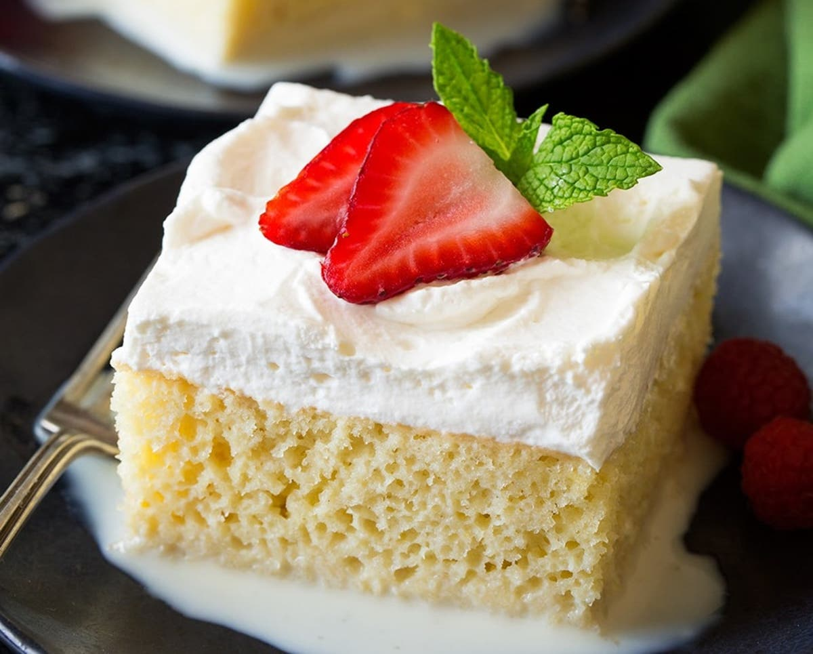

El pastel, tarta, o torta de tres leches es un postre tradicional latinoamericano.Es un postre popular en
México, Nicaragua, Venezuela, Colombia, Perú, Bolivia, Chile, Ecuador, Costa Rica, Puerto ...Consiste en un
bizcocho bañado con tres tipos de leche: leche evaporada, crema de leche y leche condensada, que le dan su
nombre. Suele acompañarse con un merengue de claras de huevo y con cerezas al marraschino y espolvoreado con
canela en polvo. Usualmente la receta no lleva mantequilla y por eso tiene una textura esponjosa.
La decoración puede variar dependiendo de la región o del gusto del comensal. Se puede utilizar fondant,
chantilly o merengue.
Puede prepararse de diferentes maneras, por ejemplo se puede agregar chocolate a la decoración o bien agregar
dulce de leche (cajeta/manjar/arequipe), o alguna bebida alcohólica (ron, brandy, anís, etc.) a la mezcla del
tres leches.

Ingredientes
6 unidades de Huevos
200 gramos de Azúcar (1 taza)
200 gramos de Harina
1 cucharadita de Esencia de vainilla
1 cucharadita de Polvo para hornear
1 lata de Leche condensada (grande)
1 lata de Leche evaporada (grande)
1 lata de Crema de leche (grande)
3 unidades de Claras de huevo
1 taza de Azúcar (al gusto)
Preparacion
Empezaremos nuestra tarta de tres leches fácil por la elaboración del bizcocho, pero antes precalienta
el horno a 200 ºC. Coge un recipiente y bate los huevos hasta que adquieran una textura espumosa, luego
agrega el azúcar poco a poco y sin dejar de batir.
Deberás batir hasta que la mezcla triplique su volumen. Después, agrega la harina previamente tamizada
junto con el polvo de hornear, bátela haciendo movimientos envolventes. Es aconsejable que la
introduzcas poco a poco para que te sea más fácil integrarla. Incorpora también la esencia de vainilla y
sigue mezclando.
Cuando tengas la masa del bizcocho tres leches fácil lista, unta un poco de mantequilla y harina en un
molde de horno y viértela en él. Deberás hornearlo durante 25-30 minutos.
Se recomienda pinchar el bizcocho con un palillo para asegurarse de que realmente está hecho por dentro
una vez pasado el tiempo. Cuando esté listo, retíralo del horno y deja que se enfríe.
Mientras se hornea, puedes preparar la crema de tres leches. Para ello, vierte el contenido de las tres
latas (condensada, evaporada y crema de leche) en un recipiente con la capacidad suficiente y bátelas.
Es aconsejable usar una batidora, varilas eléctricas o licuadora. Si lo deseas, puedes elaborar tu
propia leche condensada siguiendo los pasos de esta receta. Con esta mezcla bañaremos el bizcocho en el
mismo molde donde se horneó.
Ahora es el turno del merengue. Es muy sencillo, solo tienes que batir las claras a punto de nieve e ir
agregando, poco a poco, el azúcar. Debes batir hasta que el merengue adquiera la consistencia adecuada.
La cantidad de azúcar es al gusto, de manera que ve probando la mezcla conforme la vas añadiendo para
determinar si ha alcanzado el punto dulce que deseas. Si quieres conocer los pasos de forma más
detallada, no te pierdas nuestra receta de merengue suizo. Este merengue lo usaremos para cubrir la
parte superior de la torta 3 leches.
Cuando el bizcocho haya reposado, vierte la mezcla de tres leches sobre él y deja que se empape por
completo. Es probable que la torta tarde aproximadamente una hora en impregnarse de la mezcla, todo
dependerá del grosor que tenga el queque.
Este pastel de tres leches se puede dejar en el mismo molde donde se horneó, pero si lo deseas puedes
desmoldarlo antes de bañarlo con la mezcla de tres leches, pasarlo a otro molde para presentación y,
posteriormente, bañarlo con la crema.
Cuando el bizcocho haya absorbido por completo la mezcla, ya puedes cubrirlo con el merengue. Aquí
deberás dejar rienda suelta a la imaginación y decorarlo como gustes, puedes aplicar una capa fina de
merengue, o utilizar una manga pastelera y hacer distintas formas, etc.
Una vez terminada la torta tres leches, puedes adornarla con un poco de canela espolvoreada por encima,
si gusta, o hacer un caramelo suave y dejar caer sobre el bizcocho de tres leches en forma de hilo fino.
Otra opción totalmente válida es decorarla con cerezas, frutillas o frambuesas. Puedes acompañar este
postre de tres leches con una deliciosa taza de chocolate caliente o, si prefieres algo más frío, como
un helado de chocolate o vainilla.